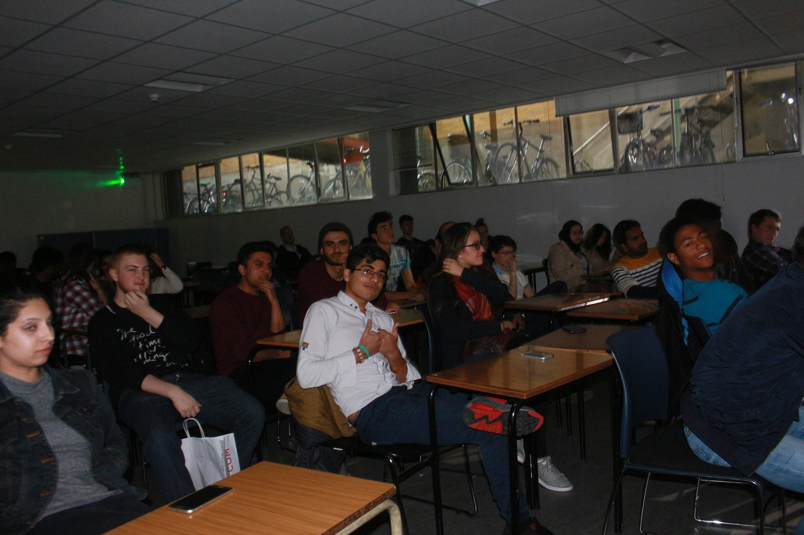

Physics is the study of the natural or material world and natural phenomena around us, including the fundamental particles of nature and their interactions, properties of atomic nuclei, atoms, molecules, gases and solid matter. It covers fields such as astrophysics, cosmology, and physics of materials. The laws of physics are the laws which govern electricity and magnetism in modern devices such as mobile phones, computers, the internet, radio and television, the mechanics of aviation and space flight, quantum mechanics underlying magnetic resonance imaging in medicine etc.
Physics at Dublin Inistitute of technology enjoys a worldwide reputation, and provides an exceptionally stimulating environment for study and for subsequent postgraduate work. This course offers you the opportunity to study with world-leading experts in the School of Physics, with modules designed to provide you with a flexible qualification for employment across a range of research and industrial settings.
Students in the final year of DIT Physics and Physics and Astrophysics courses undertake a 9 week full-time research project, either in DIT or at a research institute or university abroad. Students travel to destinations as far afield as Australia and Hawaii for these projects.
Our Physics course includes a strong background in core physics subjects as well as specialised courses in condensed matter physics, including topics such as semiconductor devices, metal physics and superconductivity. Practical aspects of the course include topics in electronics and instrumentation.
Physoc aims to provide all things Physicsy to all physicsy people. While it’s true most of our members come from those studying maths or physics, we encourage absolutely anyone with even the slightest interest in physics to join. To achieve our noble aims we generally organise talks every two weeks, interspersed with social events and tutorials. Our talks have a physics theme and are aimed at all college members. We host board game nights and pub quizzes, as well as our annual Halloween Party and Christmas Party in conjunction with Mathsoc. We also aim to provide introductory tutorials in Latex and Inkscape (For 2nd/3rd year lab reports), as well as Mathematica (For 1st year TP’s and anyone else who despises tedious maths operations). This year we’re also hosting the first ever Maths-Physoc ball, currently in the “looking for a terrible pun” stages of development. This is going to be an absolute cracker of a night so keep an eye on our Facebook page for more details, and keep Wednesday the 16th of November free. Also new for this year, Physoc are introducing informal Lunchtime Chats, a chance to eat your packed/bought lunch in the Schrodinger Library, with a short casual talk by a researcher here at trinity, and free tea and coffee. Our trip adviser is currently holed up in his room, organising what promises to be a super trip away. There is talk of either a 1st term reading week or Christmas break international trip, so make sure and attend as many as events as possible early on in the year so we know who you are and are more likely to let you go (just kidding, we have a fair and square policy of first come first served at sign-ups, but it was worth a shot!) And for those of you looking to get even more involved, in early October there will be positions available on the organisation committee for our Irish Physics Students’ Conference, to be held in early March. We also taking suggestions for a more acronym friendly name. We also have a library from which members can borrow books, check out the library tab for more info.
